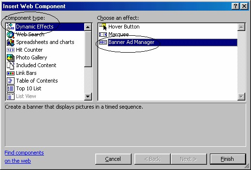
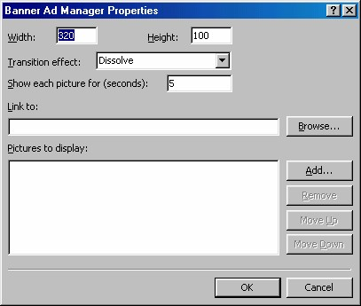
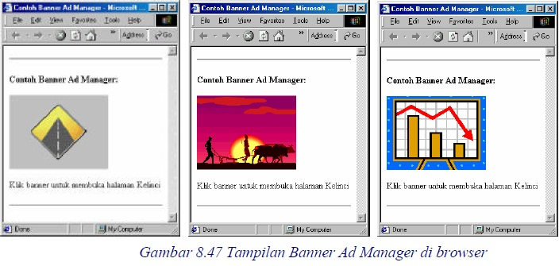

7 Banner Ad Manager
Banner adalah teks melintang dari kiri ke kanan halaman. Pada banner kita bisa
mengatur agar teks yang terpasang bisa bergerak sehingga lebih menarik perhatian.
Hal ini suadh kita bahas sebelumnya, yaitu marquee.
Selanjutnya kita akan membahas pemakaian banner lainnya, yaitu Banner Ad
Manager. Perbedaan banner ini dibandingkan marquee adalah mampu menampilkan
beberapa gambar secara bergantian dan bisa membuka halaman lain karena
mempunyai link.
7.1 Membuat Banner Ad Manager
Sarana pembuatnya juga sama dengan pembuat marquee, yaitu Web Component.
Cara pembuatannya adalah:
1. Tentukan halaman yang akan digunakan sebagai tujuan link, kalau perlu buatlah
sebuah halaman baru. Misalnya halaman Kelinci.htm.
2. Aktifkan Insert _ Web Component. Muncul kotak dialog Insert Web
Component.

Gambar 8.45 Kotak dialog Insert Web Component
3. Pada bidang kiri, klik Dynamic Effects . Pada bidang kanan, klik ganda Banner
Ad Manager. Muncul kotak dialog Banner Ad Manager Properties.

Gambar 8.46 Kotak dialog Banner Ad Manager Properties
4. Pada kotak isian Width dan Height isikan ukuran lebar dan tinggi banner.
5. Pada kotak pilihan Transition Effect, tentukan jenis animasi transisi penampilan
gambar.
• None , transisi tanpa efek.
• Blinds Horizontal, efek berupa beberapa palang horisontal yang memutar
untuk mengganti gambar.
• Blinds Vertical, efek berupa beberapa palang vertikal yang memutar untuk
mengganti gambar.
• Dissolve , efek memudarnya gambar sampai berganti gambar.
• Box in, efek munculnya kotak dengan gambar lama yang mengecil ke arah
tengah gambar lalu menghilang sehingga gambar baru yang bertugas sebagai
latar belakang bisa tampak penuh.
• Box out, efek munculnya kotak dengan gambar baru dari tengah gambar
yang membesar sehingga menutup seluruh gambar lama.
6. Tentukan lama munculnya gambar pada kotak isian Show each picture for
(seconds):.
7. Pada kotak Link to, tuliskan adress halaman tujuan link. Anda bisa
menggunakan tombol Browse untuk mencarinya.
8. Masukkan gambar-gambar yang akan ditampilkan ke banner. Gunakan tombol
Add… untuk memcari gambar-gambar tersebut.
9. Klik OK.
Anda bisa mencobanya pada browser, perhatikan bahwa banner akan menampilkan
gambar-gambar secara bergantian sesuai urutan yang Anda pasangkan pada kotak
Pictures to Display di kotak dialog Banner Ad Manager.
Kalau Anda klik banner tersebut maka halaman tujuan link akan ditampilkan.

7.2 Mengedit Banner Ad Manager
Untuk mengubah ukuran banner, Anda bisa langsung mengubahnya pada halaman,
yaitu klik banner lalu drag handle.
Sedangkan untuk pengeditan properti lainnya, Anda harus menggunakan kotak
dialog, dengan cara:
1. Pada halaman, klik kanan banner.
2. Klik perintah Banner Ad Manager Properties, muncul kotak dialog Banner Ad
Manager Properties,
3. Anda bisa mengubah pilihan jenis transisi, mengedit lama tampilan atau
mengubah tujuan link.
4. Anda bisa mengatur urutan gambar dengan tombol Move Up dan Move Down.
5. Untuk menghapus gambar klik Remove.
6. Klik OK.
Copyright © Herlan Lesmana
Created with the Freeware Edition of HelpNDoc: Single source CHM, PDF, DOC and HTML Help creation